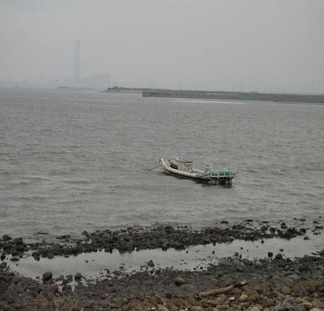
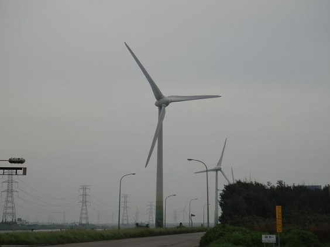
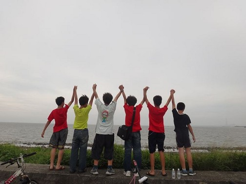
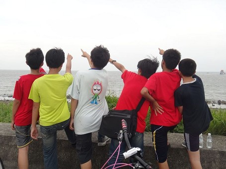

線西海灘，是個非常美麗的地方，來到海灘的人，可以撿貝殼或是找招潮蟹，同時這裡也是北返候鳥的重要棲息地，也是個非常好的賞鳥地點，這裡的地形相當特殊，只要退潮的時候，就會可能會有沙塵暴來襲，所以就要小心了。
除了地形之外，這一帶最明顯的地標就是風力發電機，一整排的風力發電機形成了一種特殊的景觀，還有，在附近也有水鳥觀察區，常有雁鴨、鷗科...等鳥類來此覓食。而且這裡還有很多熱愛海釣的民眾來這裡釣魚，農民也會利用這裡的地形，養殖牡蠣，這裡也是欣賞日落的地方喔。
海邊有人把他的船停放在那。

彰濱工業區可以看到許多風車。

看啊！他們多高興啊！應該是太久沒出來玩了。


心得分享:
這次來到了海邊，因為，本來在決定要去哪裡探查，可是，居然發現沒有地方了，所以就來到了這個線西海，我非常的喜歡來看海，因為，在日落的時候再加上日光照耀在海上的美景，是甚麼也無法比擬的了。
<--回彰濱工業區首頁 |